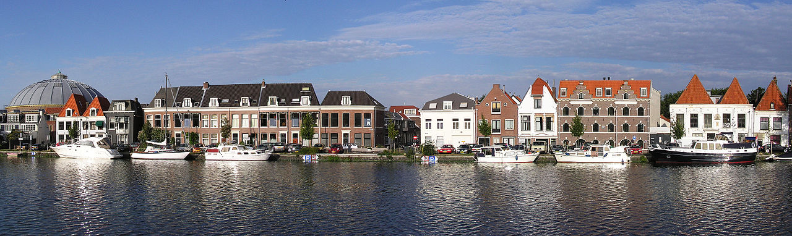

Haarlem is een Stad in Noord Holland, tevens is Haarlem ook de hoofdstad van Noord Holland. Na Amsterdam heeft Haarlem de meeste inwoners van Noord Holland.

Geschiedenis
Haarlem is al bekend sinds de 10e eeuw. In 1245 heeft Haarlem stadrechten gekregen en is blijven groeien dat het zelfs ongeveer 200 jaar later bij een van de belangrijkste Nederlandse steden behoord. Door het toenemede belang van Haarlem is in 1839 de eerste spoorlijn van Nederland aangelegd tussen Amsterdam en Haarlem.
Geloof en Politiek
Haarlem is zowel vroeger als nu grotendeels rooms-katholiek. De politieke grootste politieke partijen van Haarlem zijn D66, GroenLinks en de PvdA.
De Grote Markt
Midden in het oude centrum van Haarlem staat de Sint-Bavokerk, naast de kerk ligt de grote markt. Al sinds de 13e eeuw wordt er hier vlees en vis verkocht. Naast de Sint-Bavokerk heeft Haarlem ook de Kathedrale basiliek Sint Bavo, beide zijn rooms-katholiek. Ook heeft Haarlem nog 22 hofjes, dit waren er meer dan 40 maar veel zijn er tussen 1700 en 1900 verdwenen.
Parkwijk
De Parkwijk is een wijk in is wijk in Oost Haarlem. De wijk is vrij nieuw (de eerste huizen zijn in 1950 gebouwd), er is dus veel nieuwbouw te vinden. Sinds 2016 is de Parkwijk geen buurt meer maar een wijk.
Buurten
De Parkwijk is verdeeld in 6 wijken; de Architectenbuurt, Buitengebied de Zuiderpolder, de Kunstschildersbuurt, het Reinaldapark, de Zuiderpolder-Noord en -Zuid.
Kenmerkend
Kenmerkend aan de Parkwijk is de ruime opzet, tussen de gebouwen staan veel bomen en parkjes. In de parkwijk wonen ongeveer 7000* mensen. In deze buurt is de werkeloosheid iets hoger dan in de rest van Haarlem, de laaste jaren wordt dit wel veel meer gestimuleerd.
Berijkbaarheid
De Parkwijk is goed te berijken met het Openbaar Vervoer. Tussen Haarlem (Centraal) en Amsterdam Sloterdijk ligt het station Haarlem Spaarnwoude. Vanaf het station is het met Bus 80 3 minuten naar het Prinses Beatrixplein, lopend is dit ook goed te doen.
Berijkbaarheid
De Parkwijk is goed te berijken met het Openbaar Vervoer. Tussen Haarlem (Centraal) en Amsterdam Sloterdijk ligt het station Haarlem Spaarnwoude. Vanaf het station is het met Bus 80 3 minuten naar het Prinses Beatrixplein, lopend is dit ook goed te doen. De wijk ligt in de buurt van de A9, neem vanaf de A9 de afslag naar de A200 of N205 en je rijd recht op de Parkwijk af.
Winkels
Midden in de Parkwijk bevind het Prinses Beatrixplein zich. Om dit plein liggen veel winkels; meerdere supermarkten, een aantal restaurantjes en cafés, een bakkerij, slager en verswinkel. Kortom genoeg te doen! Wil je naar een restaurantje toe? Dan is het vaak een goede keuze om het Centrum van Haarlem in te gaan, hier is namelijk veel meer keuze.
Dingen om te doen
In de buurt van de parkwijk is veel te doen. Bezoek bijvoorbeeld het Burgemeester Reinaldapark, dit is een groot park midden in de wijk. Neem dan een kijkje op het monumenteneiland en bij e=het oorlongsmonument. Meer zin in iets actiefs? Naast het park ligt de Zeebaard Kayak Tours, bekijk Haarlem vanuit een Kayak. Met de trein is het ook makkelijk om naar het bruizende centrum van Haarlem te gaan, hier is nog veel meer te doen!
Jiu Jitsu* is een zelfverdedigingssport (of zelfs zelfverdedigingskunst) afkomstig uit Japan. De jiujitsuka (leerling) leert het snel weren van een aanval maar leert ook een aantal aanvalstechnieken. Bij Jiu Jitsu wordt soms gebruik gemaakt van technieken die onsportief zijn, omdat Jiu Jitsu gebruikt wordt om te verdedigen wordt dit juist geaccepteerd.
Oorsprong
Het is niet bekend wanneer mensen zijn gestart met Jiu Jitsu, de orginele Jiu Jitsu wordt ook Yawara genoemt en komt uit Japan. Jiu Jitsu is in vele jaren tijd aangepast door de Samurai en de Japanse burgers. De moderne Jiu Jitsu komt voort uit de Judo, hieruit zijn technieken uit de Karate en Aikido toegevoegd.
Graduatiesysteem
Als beginner start je met de witte band, dit is de 6e Kyu. Hierna volgt de gele-, oranje-, groene-, blauwe-, en bruine band (5e t/m 1e Kyu). Hierna ga je verder met de 1e Dan, dit loopt op tot de 10e Dan. Dit zijn de meestergraden. De wachttijd tussen de Kyu banden is 6 maanden, tussen de Dan banden is dit minimaal 1 jaar (bij hogere zelfs langer!).
Scholen/ Clubs
Binnen Haarlem zijn veel clubs te vinden.
HwaRang Dragon Taekwondo & Gracie Jiu Jitsu
Deze school geeft Teakwondo, (Brazilian) Jui Jitsu en Mudo. De school zit op twee plekken; in Haarlem en Heemstede.
Meer over HwaRang Dragon Taekwondo & Gracie Jiu Jitsu
Micha geeft les in Brazilian Jiu Jitsu, tijdens de lessen leer je niet hoe je aanvalt maar juist verdedigd. Ten eerste moet je altijd geweld vermijden maar als het er dan toch op aankomt dan laat je niet over je heen lopen! Naast Jiu Jitsu wordt er ook nog Taekwondo en Mudo gegeven.
De lessen worden gegeven aan de jeugd vanaf 14 en aan volwassenen.